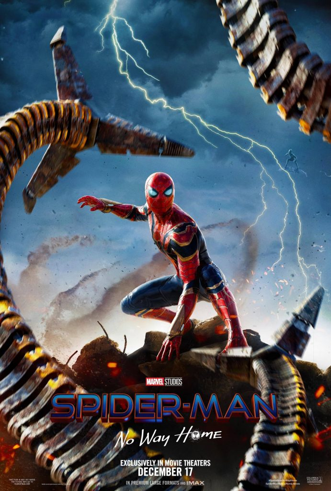
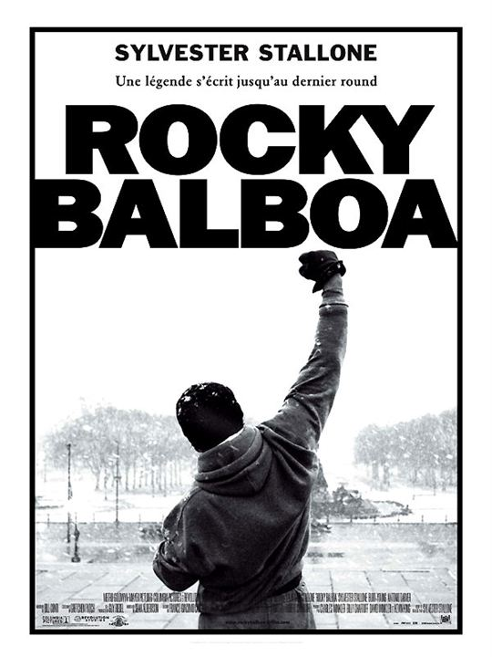
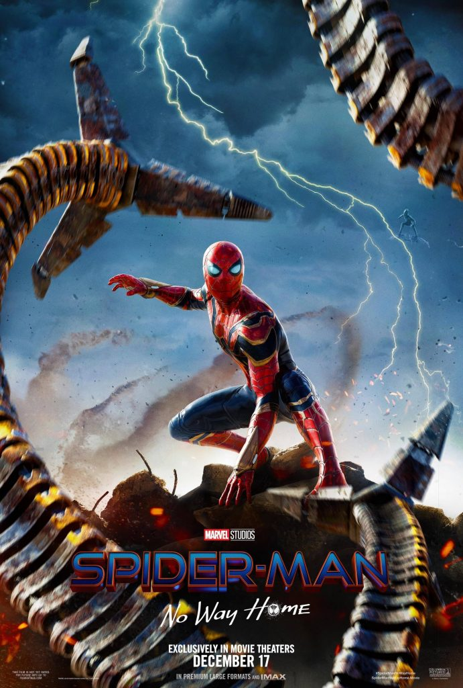
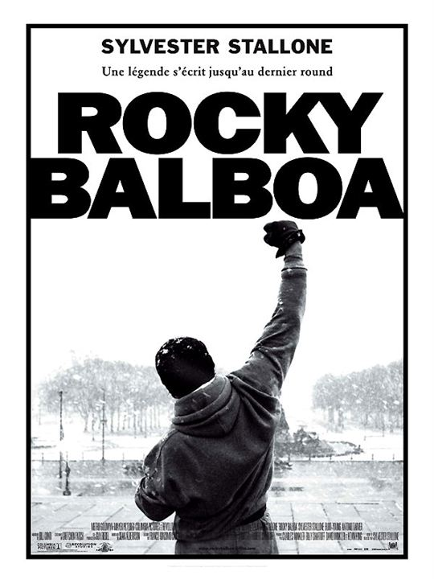
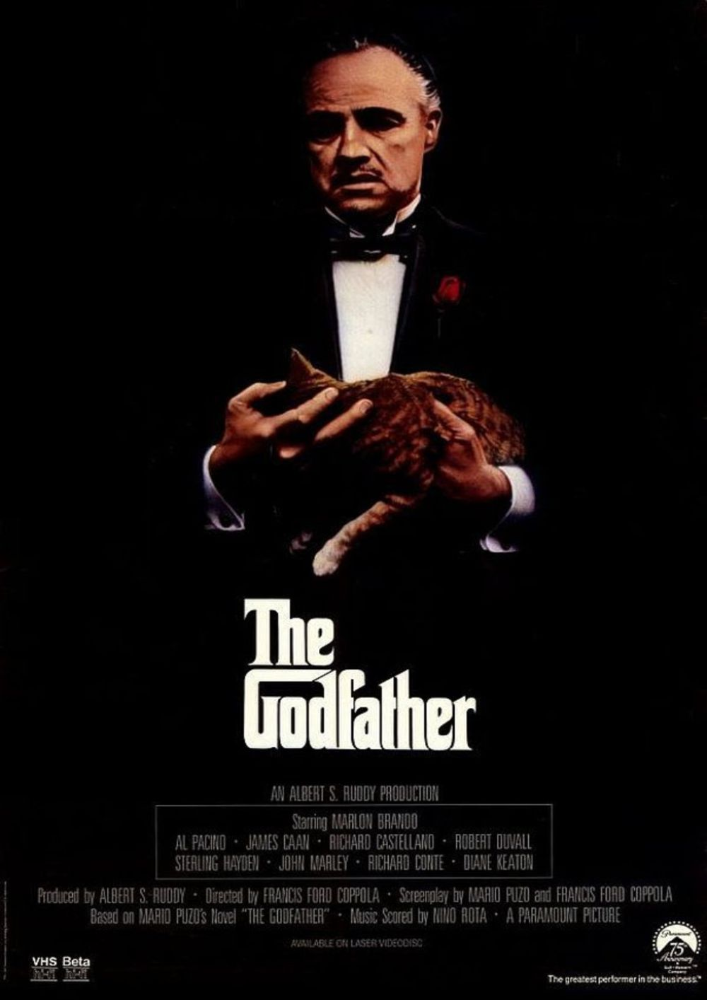
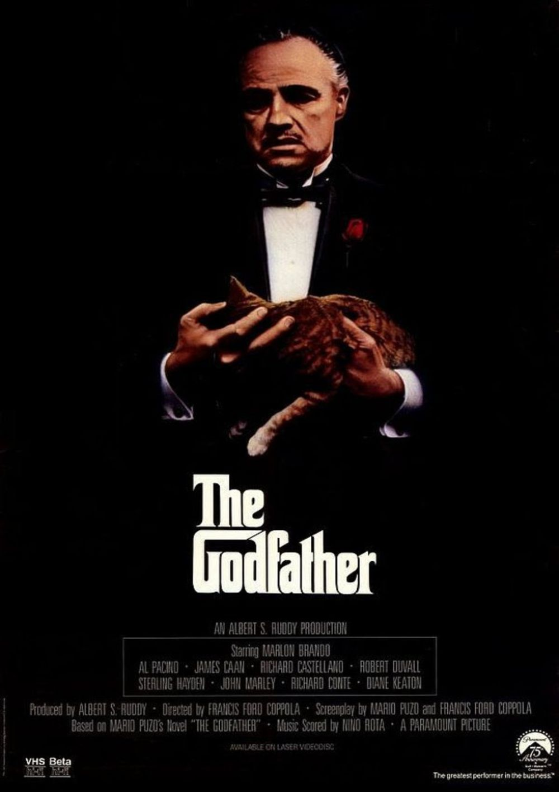
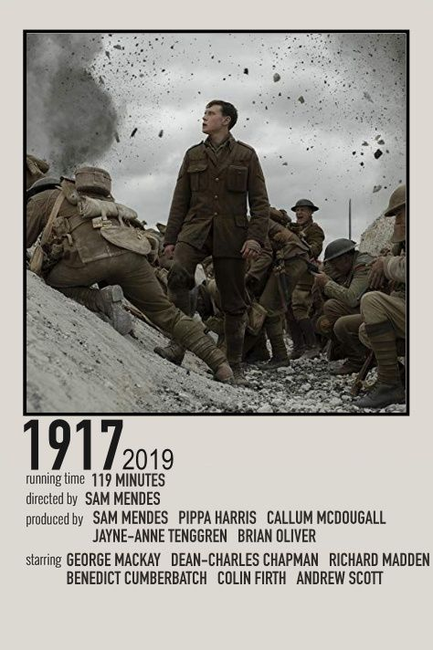
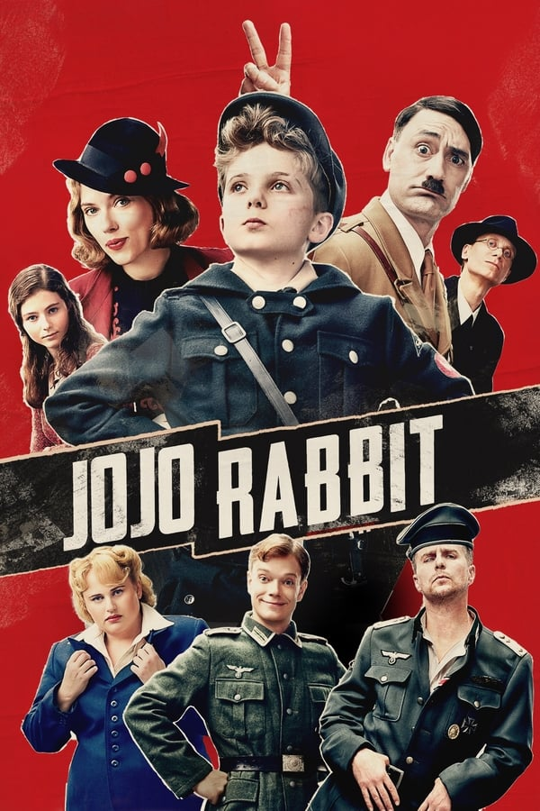

Batman segue o segundo ano de Bruce Wayne (Robert Pattinson) como o herói de Gotham,
causando medo nos corações dos criminosos da sombria cidade. Com apenas alguns aliados
de confiança - Alfred Pennyworth (Andy Serkis) e o tenente James Gordon (Jeffrey Wright) - entre
a rede corrupta de funcionários e figuras importantes do distrito, o vigilante
solitário se estabeleceu como a única personificação da vingança entre seus concidadãos.
ⓘ DETALHES
Filmes Recomendados
 



 



Filmes do Oscar
-




Clássicos do Cinema


Filmes estrangeiros


Filmes Nacionais


Animações